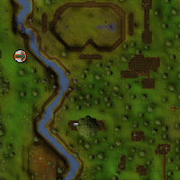
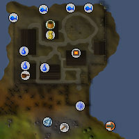
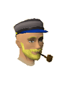
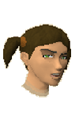
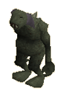

Piscatoris Fishing Colony (Members)
Warning | Introduction | Location | Points of Interest | Personalities
Quests | Dangers of the Coast | Miscellaneous
Quests | Dangers of the Coast | Miscellaneous
Warning
You will only gain access to the Piscatoris Fishing Colony by starting the Swan Song quest.
Introduction

Location

East across the seas is the Fremennik Province and its capital, Rellekka.
To the south lies the Woodland Training Area for hunting.
Points of Interest

Other than this, the colony features a unique metal press, which will convert iron bars into sheets. South of the town is also a mine, which stocks a good variety of ores.
The general store in the middle of the colony also operates as a bank, so you needn't rush back to the Tree Gnome Stronghold to store your freshly caught monkfish.
Personalities
|

Herman founded the Piscatoris Fishing Colony, and he's not about to see it destroyed just because a few sea trolls are giving him a bit of bother. The residents of the colony are not so sure, though, and live in fear of losing their livelihood. They obviously don't know just how determined Herman is.
|

Kathy Corkat runs the boats that supply the Piscatoris Fishing Colony, but with the recent troubles she is less inclined to travel there. Of course, an adventurer with money or a particularly charming hero might get her to rethink her opinion of the dangers. Essentially, she's a mercenary willing to risk life and limb for a bit of that cold, cold gold.
|
|
| Herman can be found waiting for a hero outside the colony, or plotting against the sea trolls in his office. | Kathy Corkat can be found waiting by her boat. |
Quests
The following quest can be started in the Piscatoris Fishing Colony:
Dangers of the Coast
|

Trolls can live almost anywhere, taking on the challenges of their environment without faltering. Sea trolls are among the most dangerous, as they emerge from the water almost without warning before violently attacking whoever has bothered them. If the sea trolls are not soon defeated, the Piscatoris Fishing Colony may have to close down, despite whatever Herman may have to say about it.
|

When you summon an undead army to do your bidding, make sure you know how to get rid of it when you're done! These magi have taken up residence in the colony, and seem to be enjoying their time there, especially because their formidable skills mean that few people want to try to evict them. So watch out: just because they're dead doesn't mean they can't knock you around with their powerful Magic.
|
|
| Sea trolls can be found along the Piscatoris coastline during Swan Song. | Skeleton magi can sometimes be found in the colony's sleeping quarters. |
Miscellaneous
- Seaweed spawns remarkably quickly on the clogged nets in the north-east of the colony.
- If you press iron bars into sheets for repairing the walls of the colony, Herman's brother Franklin will happily purchase them from you for 20 coins each.
- Skeleton magi drop herbs and gems, so they might be worth the risk.

More articles in
Cities and Towns
|
|